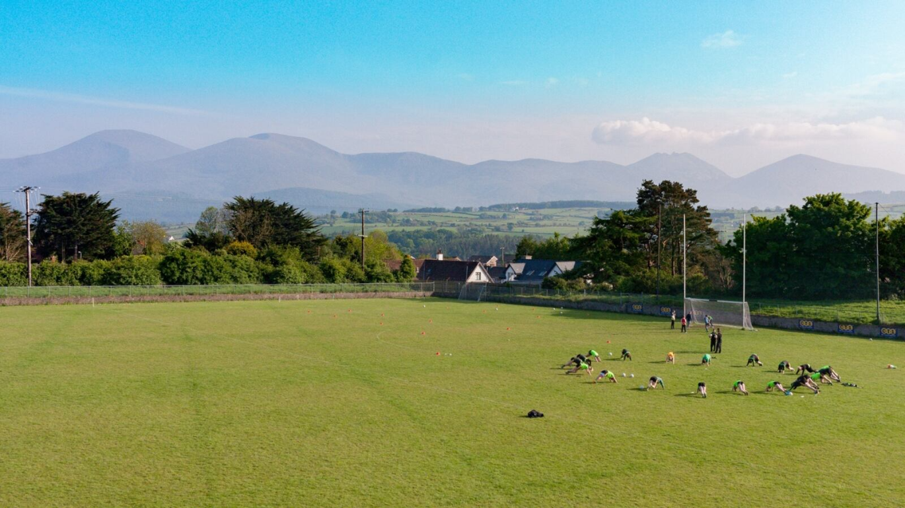
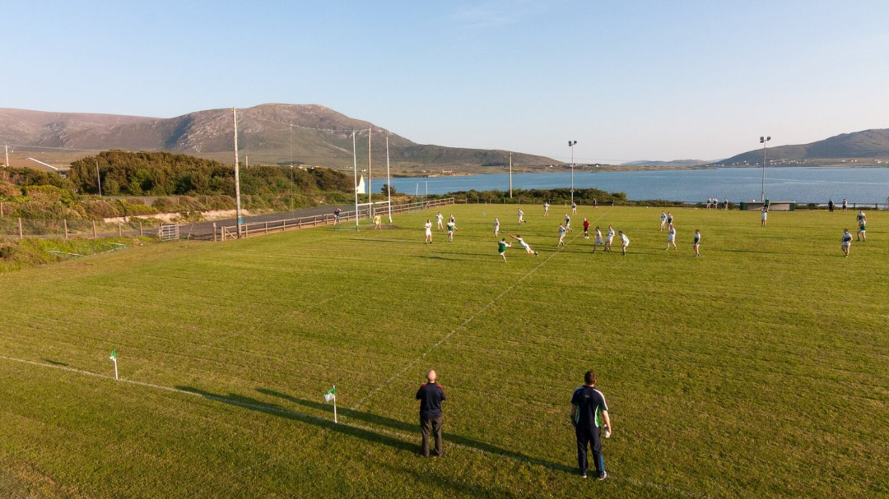
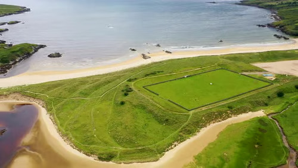

 County Clare Open meadow light Soft light opens across the turf, giving the field a broad and timeless feel.
County Cork Rolling hill framing Gentle slopes and a clear horizon make the scene feel quietly monumental.
County Galway Stone and grass The contrast of dry stone and emerald turf gives the field a strong sense of place.
County Kerry Skyline drama Cloud-led skies and broad terrain make the field feel expansive and cinematic.
 County Tipperary Golden hour turf Late light settles over the pitch, bringing warmth and depth to the scene.
 County Limerick Weathered edges Hedges and texture bring a grounded, tactile quality to the landscape.
County Waterford Evening hush Soft evening tones allow the field to hold quiet drama without losing clarity.
County Mayo Cloud-heavy horizon Brooding skies and long sightlines give the image a striking sense of scale.